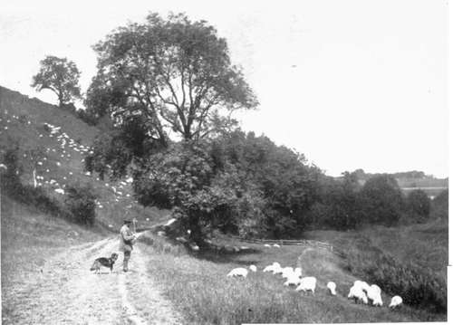
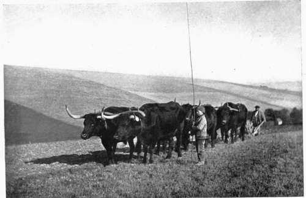

Chapter VI. On The Choice Of Subjects
Description
This section is from the book "Nature Photography For Beginners", by E. J. Bedford. Also available from Amazon: Nature Photography for Beginners.
Chapter VI. On The Choice Of Subjects
The material which is available for Natural History Photography is, as I have already stated, so abundant that no difficulty is likely to be experienced in finding subjects. The difficulty which will probably confront the beginner is the question of what shall be taken and what left, when it is considered that one worker, during his comparative short lifetime, will be able to accomplish but a very small proportion of what might be done did time permit. As it is evident, therefore, that a choice has to be made, a few suggestions may be useful. But as it is the little drops of water that make the mighty ocean, so the comparatively small efforts which the majority of workers can accomplish individually may help to swell the sum total of our increasing knowledge concerning some of Nature's mysteries.
Nature Photographers will probably fall within the limits of one or other of the following classes. First, those who have plenty of time and means to devote to their hobby. Secondly, those who have the time but are limited in means; and, thirdly, those who have very little time at their disposal, and may or may not be limited in means.
The first class will be able, if they feel so inclined, to organise expeditions and travel to distant lands, where they can engage to their heart's content in the fascinating pursuit of obtaining pictures of the fauna and flora of the country and records of events and scenes which can only be obtained in this way and by the few. There are plenty of subjects waiting to be depicted by the camera of the explorer.
The second class may find plenty of excitement, however, in hunting out subjects in the woods, fields, and lanes in their own immediate neighbourhood at very little expense, except in time and patience.
The third class, which, doubtless, will be the most numerous, may find within the walls of a small garden material enough to occupy their limited time and attention for many a day. Most houses, even in our larger towns, can boast of a small garden, and should the Nature Photographer be so unfortunately placed as to be without a garden of his own he may still be able to obtain permission to work in one belonging to some companion or friend. To take a small suburban garden as an example. Very early in the year, especially if the season be mild, the fruit or other trees will show signs of buds, which later on will develop and burst forth into leaf. Then as the season advances the early blossom will begin to show and will gradually develop until it has reached its full array of beauty; then as it begins to fall off and " set" the small fruit will form, which as the summer passes by and autumn approaches will continually be advancing towards perfection. A most interesting and instructive set of studies might be made showing the development of one or more fruit trees; comparing the different growths from the opening buds of foliage to the perfect and ripe fruit.
Another interesting series might be made by photographing a succession of flowers from those of early spring to late autumn. If suitable flowers are planted in the garden, they will be certain to attract insects, and studies mav be made of the Butterflies, Moths, Bees, and Flies which visit the blossoms. Should the photographer wish for further work in this direction, he may investigate the life histories of some of these visitors, obtaining records of their development from the egg, through the larval and pupal stages to the perfect insect.
Or, again, should he be interested in Birds he may attract them by placing food in the garden, which will help to make them tame and allow him to obtain some studies of them. A portion of a cocoa-nut or piece of bone with a few scraps of meat left on it will soon attract the attention of the Tits, and if hung up in a good light and where they can be easily seen, much pleasure will be derived from watching the birds attracted by them. The photography of Birds will be found difficult in comparison with stationary objects, owing to their quick and incessant movements. It is very seldom that they will allow a time exposure to be made upon them, and even instantaneous exposures will often be found to be useless on development owing to movement having taken place during exposure. On one occasion I was trying to obtain a photograph of a Robin feeding its young in a nest built in my own garden, but several exposures made as the bird alighted on a branch near the nest proved on development to contain no image whatever of the bird, which, although a quick exposure had been given by a shutter, had managed to fly off on the slight noise made in releasing it, before its image could be impressed on the plate. Birds are tamest during the nesting season, and studies may be sometimes obtained then which would not be possible at other times. Nesting boxes may also be placed in suitable positions, but in doing so care should be taken that they are not placed where the full rays of the sun falls on them for any length of time, or the heat will probably suffocate either the sitting bird or young ones when hatched early become accustomed to them tenanted later on according rrow birds year will form attractive subjects for the camera, and no doubt the garden will harbour at times snails of various kinds and perhaps a toad or frog.
Those photographers who, for want of time, cannot wander far from home may, during the spring, summer, and autumn, in a garden such as I have imagined, devote an hour or two before breakfast to their hobby, if they so desire, with advantage to themselves and to their work. A very interesting set of studies could be made from the various birds, insects, and flowers found in a garden during the year.
But while the garden may yield a sufficient store of material for a good deal of work, considerably more may be discovered within a small radius from a farm or homestead in the country. I have often been surprised to find a far greater number of birds' nests, for example, in and about a garden belonging to a country cottage, or in the immediate vicinity of a farm-yard, than during a walk of several miles through fields and lanes.
The photographer who does not wish to confine his attention to one branch of study may, like the Bee, flit from flower to flower—that is to say, from subject to subject—gathering honey from whence he will to add to his store of results.
Then, again, our various trees would make excellent subjects, and might be made practically useful when we remember how few persons there are who can tell at a glance one kind of tree from another even amongst our own common examples. A series of photographs might be obtained of them in spring, summer, autumn, and winter, together with their bark, leaves, flowers, and fruit. There are, I believe, about two hundred different kinds of insects which, during their larval stages, feed upon the Oak. What an opportunity for some budding Nature Photographer to figure, not only the tree itself, but all the insects which have been known to feed upon the foliage, during their early existence. Such an undertaking would certainly be no light one.
Fig. 24. A Summers Day.
Fig. 25. Sussex Oxen at Plough.
In the vegetable world, apart from the wild flowers, studies might be made of the various grasses, and of some of the fungi, to be found in numbers at certain seasons of the year, principally in the autumn.
Some of the most beautiful curves in Nature are found in shells, and while there are a number of interesting specimens of land shells, those photographers living near the sea would be able to add a good number of marine specimens to their collection of studies; in fact a stretch of a mile or two of shingle washed by the tide would provide numerous subjects for any one interested in marine life.
In settling on the choice of subjects I would suggest that a connected series of photographs always possess more interest than a mere disjointed collection, and will often prove of far greater scientific value also. The suggestions which have been made will probably lead the earnest student to work out for himself similar ideas to those already given.
Continue to:
- prev: The Production Of Lantern Slides And Enlargements
- Table of Contents
- next: Chapter VII. A Few Hints On Stereoscopic Nature Photography
Tags
nature, photography, art, birds, camera